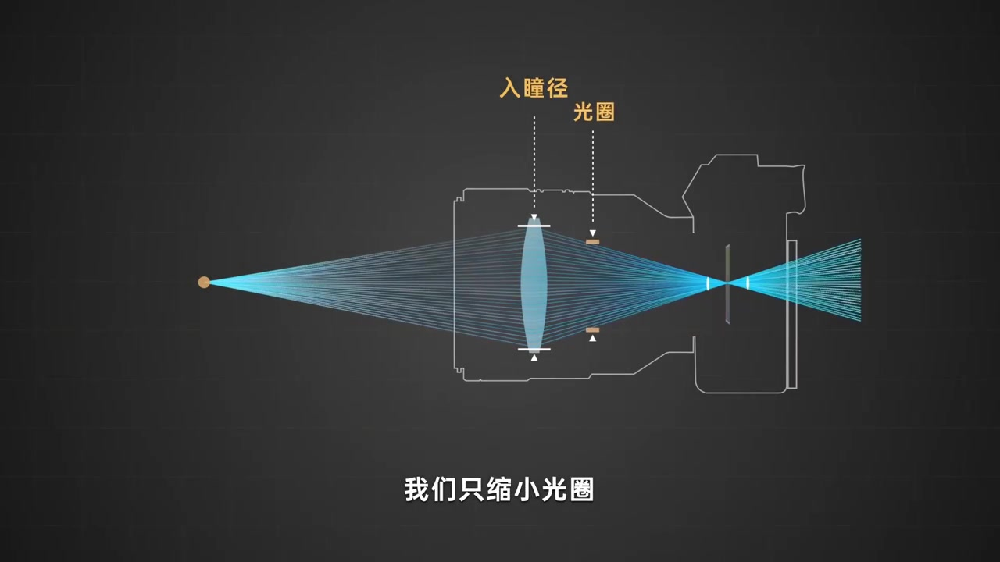
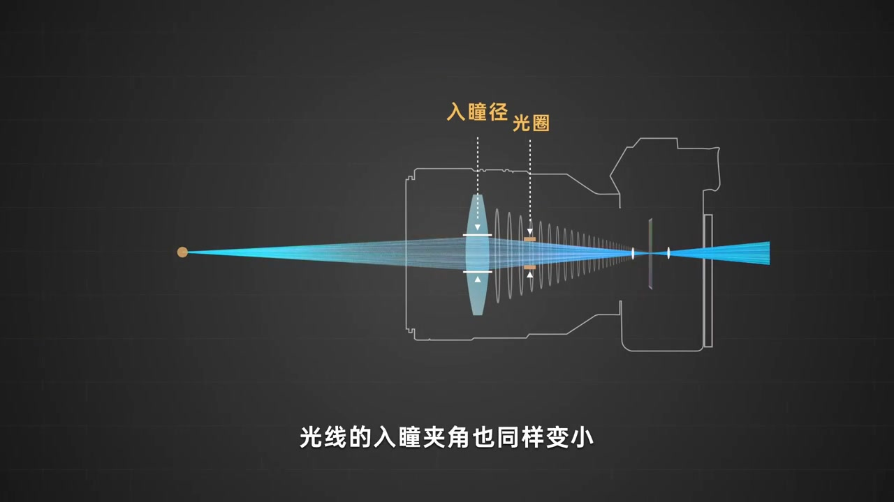
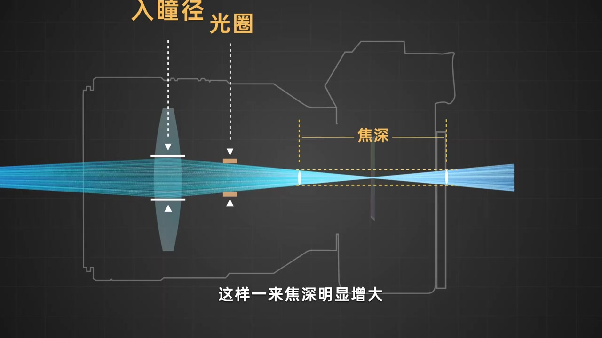
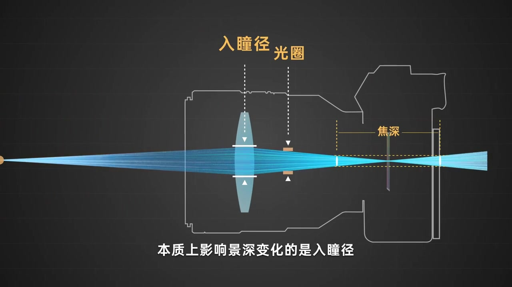
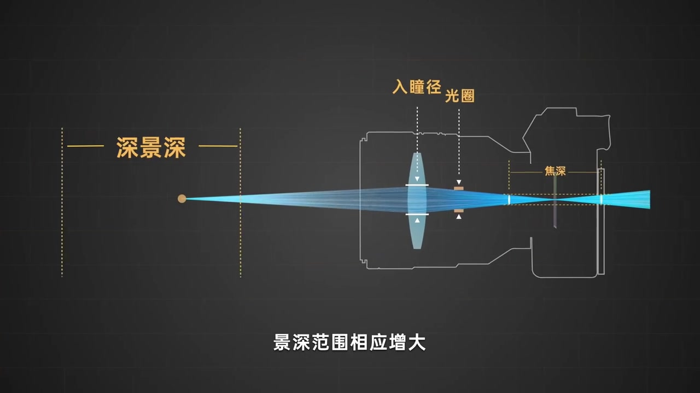
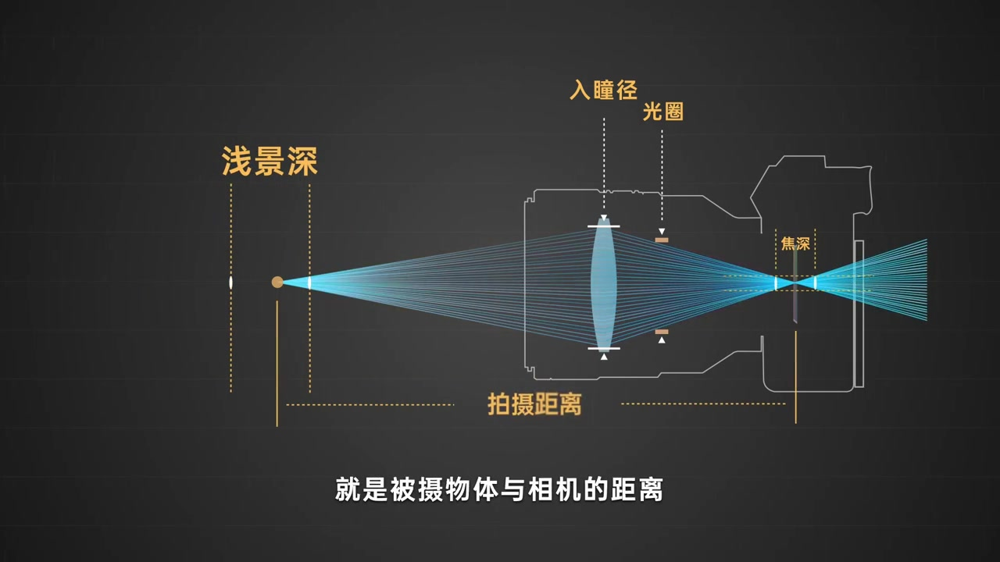
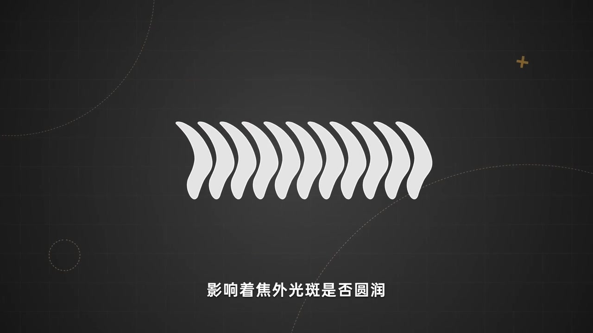
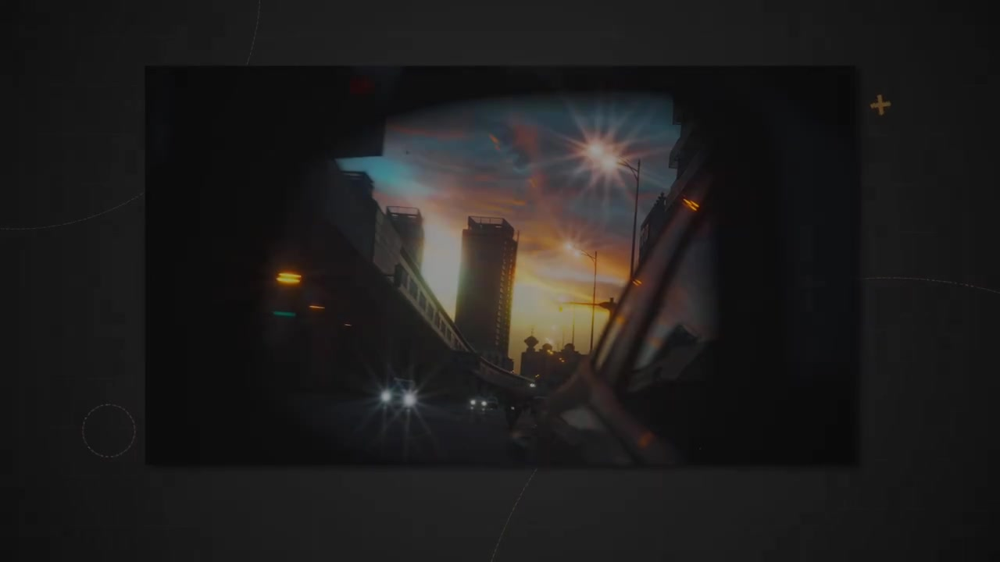

开场：控制其他变量，只缩小光圈
这是光圈科普系列的完结篇。作者先把实验条件钉死：在控制其他变量的前提下，只做一件事——缩小光圈。画面立刻标出入瞳径与物理光圈两处，让你看见光圈叶片收窄时，入瞳径也跟着变小。
紧接着字幕点出第二层变化：光线的入瞳夹角同样变小。原本铺得更开的光锥被收窄，整条因果从「拧光圈」走到「光学几何」。


容许弥散圆固定，焦深与景深被拉开
光锥变窄之后，作者强调：容许弥散圆的直径是固定不变的。要把这个固定直径重新「对」在更窄的光锥上，弥散圆的边界就要向两侧延伸——于是焦深明显增大，对应的景深也随之变大。
这里画面用「焦深」标在传感器附近，口播又落到「景深」：物方清晰区间与像方允许失焦范围被同一套几何连起来。

术语提示：本段画面同时出现「焦深」与后续「景深」。前者偏像方/传感器侧可接受清晰范围，后者是物方清晰区间；视频用动画把两者串成同一因果。
本质是入瞳径，日常说法仍是「光圈」
推导到此，作者给出本集核心纠正：本质上影响景深变化的是入瞳径，而非物理光圈本身。但从另一面说，入瞳径很大程度上受物理光圈控制，所以大家通常仍说「光圈影响景深」。

口诀再走一遍：收小更深，开大更浅
作者把刚才的因果压成可记的对照：调小光圈 → 入瞳直径缩短 → 光线夹角变小 → 景深范围增大 → 景深更深；放大光圈则相反，景深更浅。画面一度用「深景深」标出物方清晰区被拉长的状态。

第二个旋钮：被摄体与相机的距离
除光圈外，另一个重要因素是被摄物体与相机的距离。原因同样落在夹角上：距离改变会影响入射光线夹角大小，从而改变容许弥散圆所定义的区间，景深便随之变化。

至此，作者收束前半段：我们也就明白了光圈在创作影像时所担负的作用——不只曝光，更通过入瞳径与夹角改写景深。
旁支：叶片形状、衍射上限与星芒
作者补充：除了曝光和景深，光圈还有别的影响。例如叶片数量与形状，会影响焦外光斑是否圆润；光圈缩到一定程度，光路狭小造成的衍射会限制成像质量；也有人专门利用这些特性，去拍星芒一类的风格化影像。


画面字幕核对：本段「焦外光斑」「光路」「衍射」在字幕中清晰；Whisper 分别误作「胶外」「光录」「眼射」。
收尾：整期围绕「圆」，影像没有标准答案
临近尾声，作者回望整期——其实都在围着一个元素转：圆。影像从来没有标准答案，如同算不尽的圆周率；现实里很难找到完美的圆。了解这些知识未必立刻提高拍摄水平，但像科学家对圆的执念一样，也许只有了解得更深一点，才能走得更远一些。
视频总长约 2 分 19 秒；口播主体约到 01:56，其后为鸣谢与字体致谢画面，画面长期偏静态黑底字幕。